투혼 MTS 도움말
신차트
분석은 정교하게,
설정은 간편하게!
더 정교해진 지표 설정과
자유로운 레이아웃으로
나만의 차트 환경을 완성해보세요. 📊
신차트
🧐 더 강력해진 분석 도구,
리뉴얼 전에 가장 먼저 경험해 보세요!
기존 차트보다 훨씬 다양해진 전문 지표와
강력한 커스터마이징 기능을 가득 채워
돌아왔어요.💡
※ 본 내용은 차트의 기본 기능에 대한 설명으로,
MTS차트는 본 가이드를 통해 동일하게 안내됩니다.
화면소개
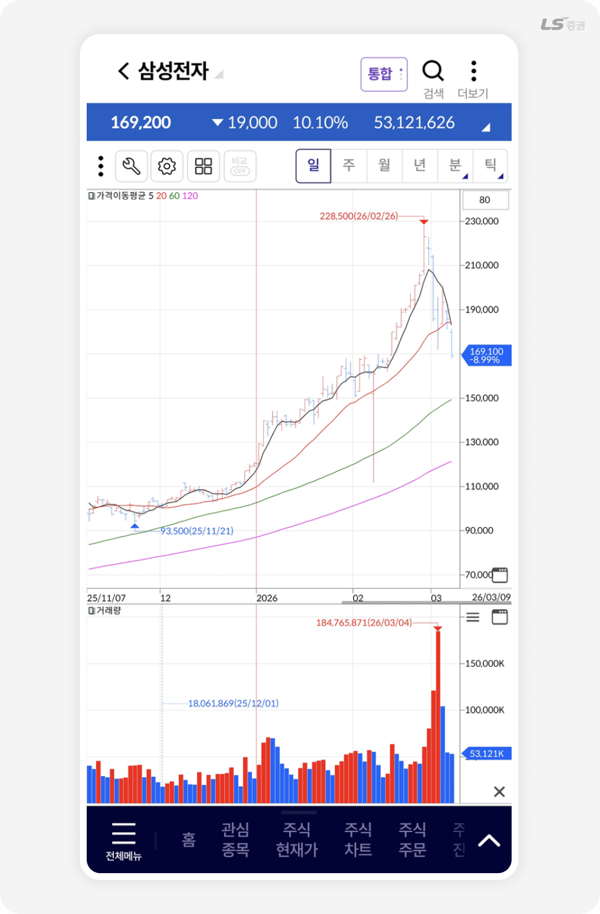
신차트는 분석의 속도를 높이는 기본 기능인 더보기, 도구, 분할설정 기능과 분석의 깊이를 더하는 차트설정 기능인 화면설정, 차트유형, 지표설정 등이 있어요
기본 주요 기능
-
1더보기
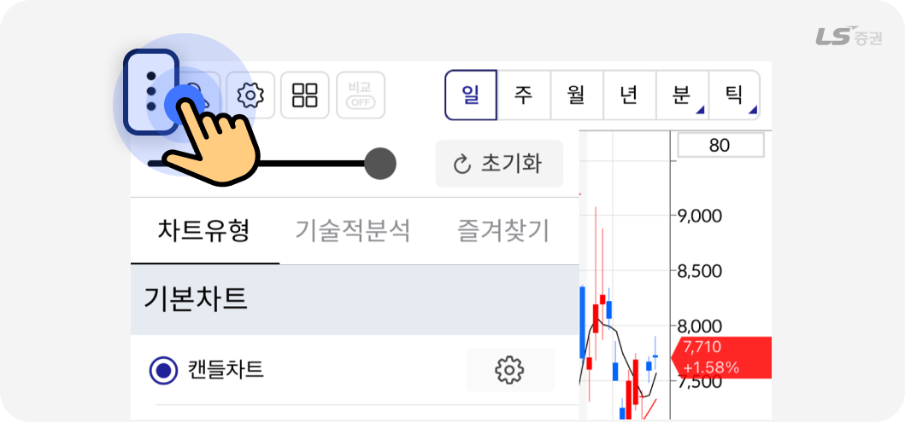
차트 유형 / 기술적 분석 / 즐겨찾기를 빠르게 설정할 수 있으며 우측 상단 초기화 버튼을 통해 설정값 초기화도 가능해요.
차트 화면에 3개 탭(차트유형 / 기술적 분석 / 즐겨찾기)이 있어, 별도의 설정 화면을 거치지 않고 차트를 보며 빠르게 세팅할 수 있어요.
-
1-1차트유형
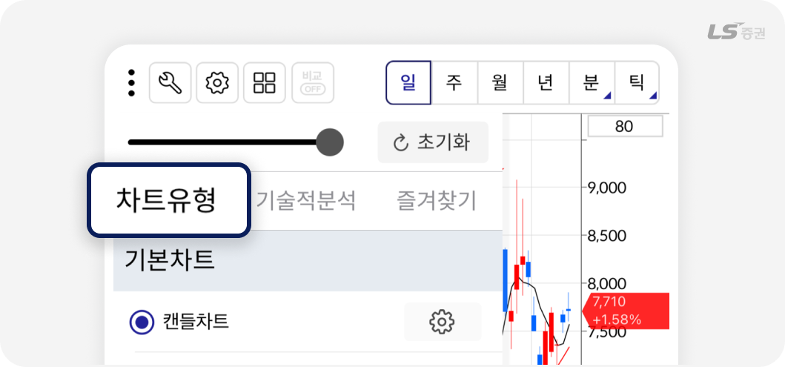
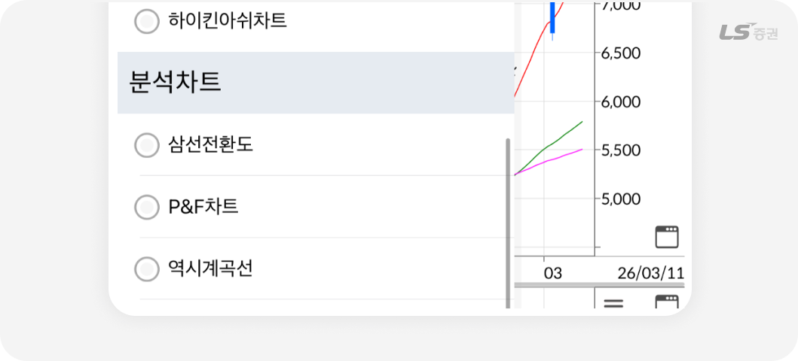
기본차트와 분석차트를 제공해요.
-
1-2기술적 분석
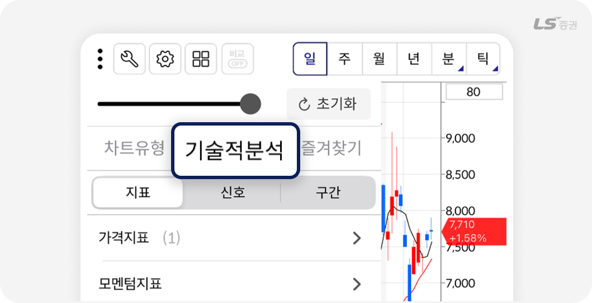
지표, 신호, 구간 등에 대한 보조지표 항목을 선택하여 차트에 다양한 분석 정보를 표시할 수 있어요.
-
1-3즐겨찾기
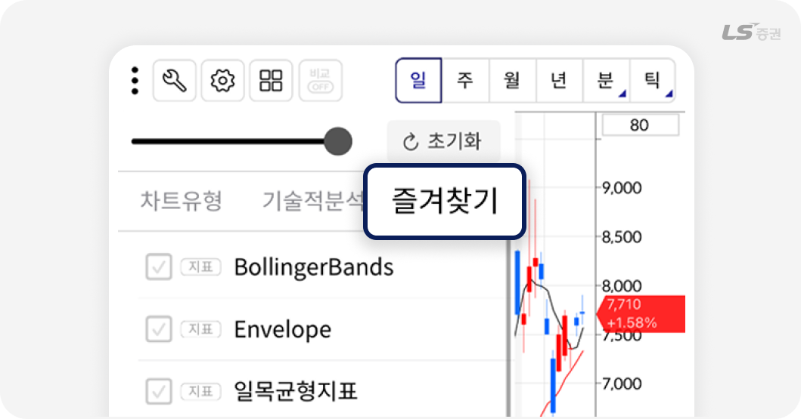
즐겨찾기한 보조지표 항목을 빠르게 표시할 수 있어요.
-
1-1차트유형
-
2도구
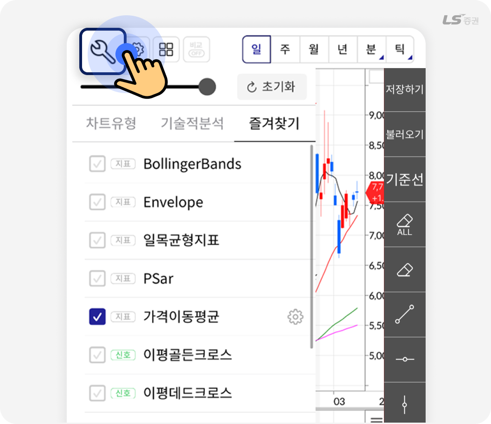
우측 사이드바에 추세선 / 가격 비교 도구, 피보나치 분석 / 간(Gann)분석 도구와 도형 그리기 / 기타 추세분석 및 그리기 도구 등 차트 분석에 필요한 도구를 사용할 수 있어요.
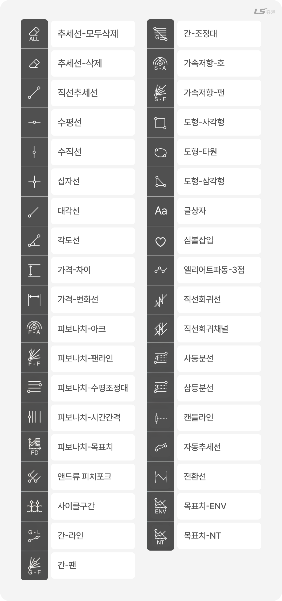
-
3분할설정
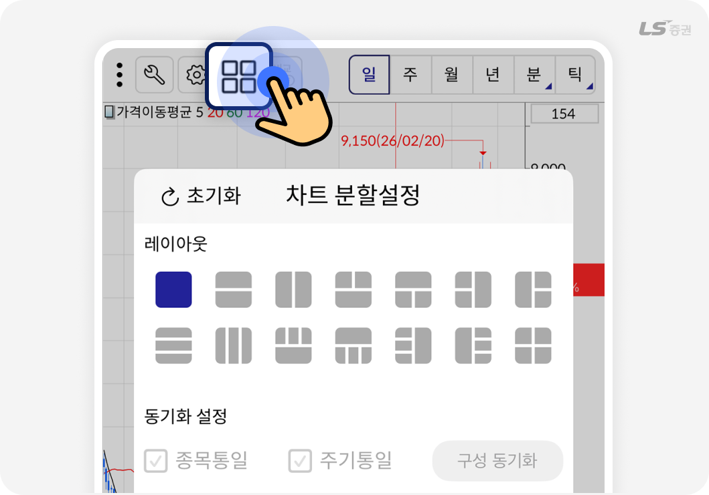
사용자의 매매 스타일에 최적화된 레이아웃을 구성하고, 종목과 주기를 하나로 묶어 간편하게 제어할 수 있어요.
✤ 차트 커스터마이징 : 상승·하락 캔들과 배경 색상까지 사용자 취향대로 맞춤 설정이 가능하여 시각적 편의성을 높였어요.
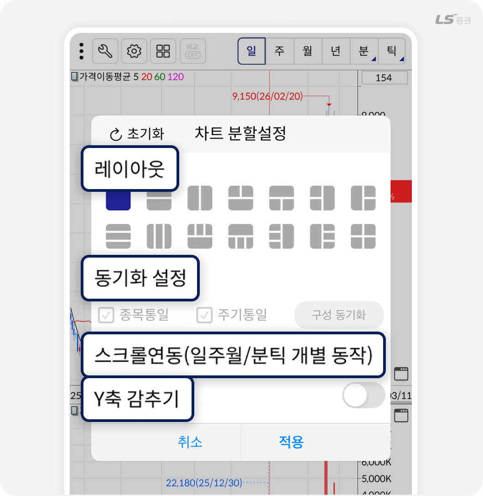
-
3-1레이아웃
기본으로 제공되는 다양한 레이아웃을 통해 원하는 구성을 선택해보세요.
-
3-2동기화 설정
조회 중인 차트 영역의 종목, 주기, 구성을 체크된 다른 차트에 동일하게 반영할 수 있어요.
-
3-3스크롤연동(일주일/분틱 개별 동작)
스크롤바 위치를 이동 시 다른 차트에서도 스크롤바 위치를 동기화시켜 함께 이동시킬지 여부를 선택할 수 있어요.
-
3-3Y축 감추기
Y축 표시 여부를 선택할 수 있어요.
-
3-1레이아웃
내 매매 전략에 맞춘
차트 세팅의 정석
🔍 분석의 정교함을 더하는 매매 전략
최적화 솔루션
차트 설정 기능
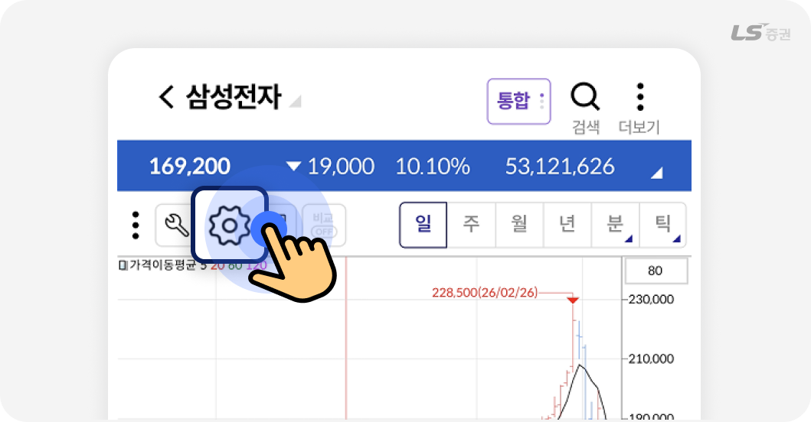
-
1화면설정
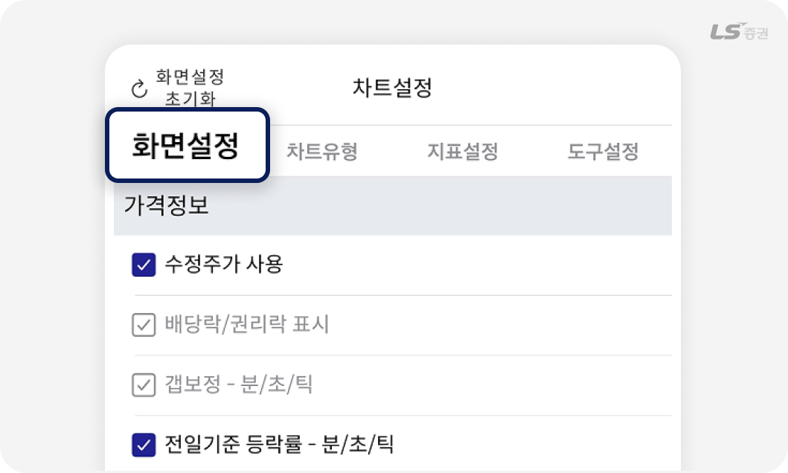
차트 화면에 대한 기능으로서 사용자의 시각적 편의를 극대화하여, 복잡한 데이터 속에서 오직 가격 흐름에만 몰입하게 만드는 환경 제어 기능이에요.
-
1-1가격정보
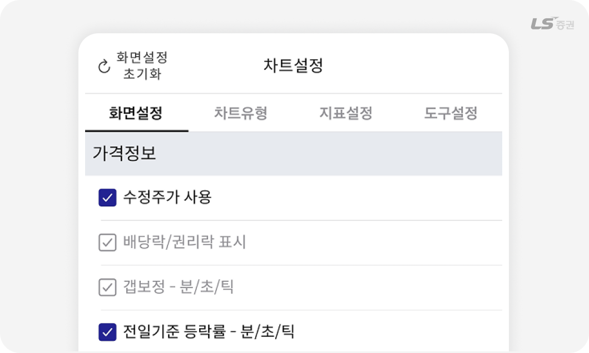
차트의 왜곡을 방지하거나 매매 판단의 기준이 되는 수치들을 어떻게 시각화할지 결정하는 핵심 기능으로 데이터의 신뢰도를 확보하는 작업이에요.
-
1-2화면표시
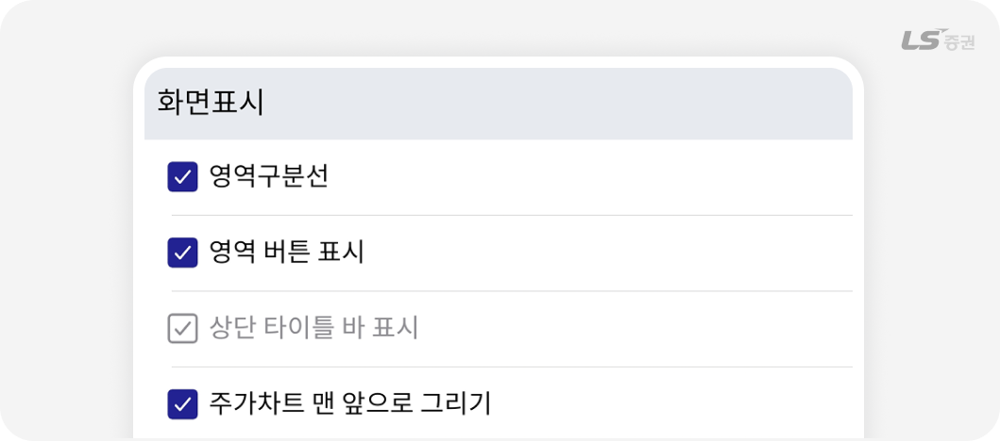
차트의 시각적 구성 요소를 제어하여 정보를 얼마나 쾌적하고 명확하게 보여줄지를 결정하는 기능으로 사용자 인터페이스(UI) 최적화에 초점을 두었어요.
-
1-3편의기능
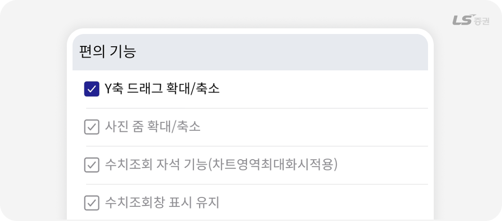
차트를 컨트롤하거나 데이터를 조회할 때의 편의성을 극대화하여 분석의 효율을 높여주는 설정 기능이에요.
-
1-4스킨
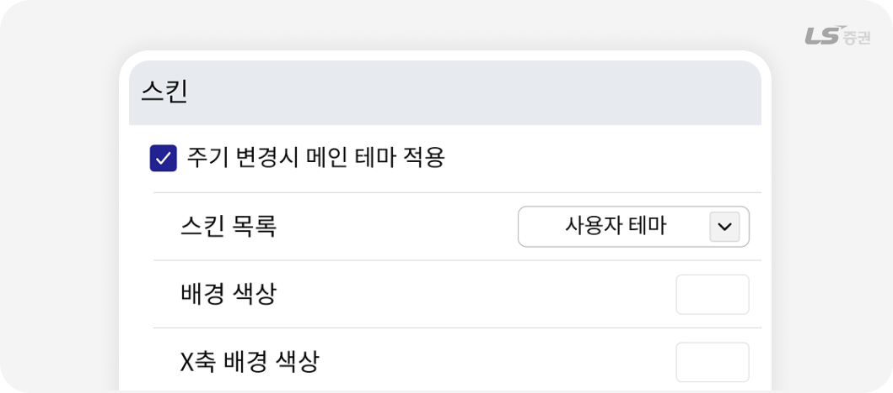
차트의 전체적인 시각적 테마와 색상을 결정하는 기능으로 장시간 차트를 조회할 때의 눈의 피로도를 조절하거나 본인의 취향에 맞는 매매 환경을 조성하는 데 사용해요.
-
1-5차트 저장
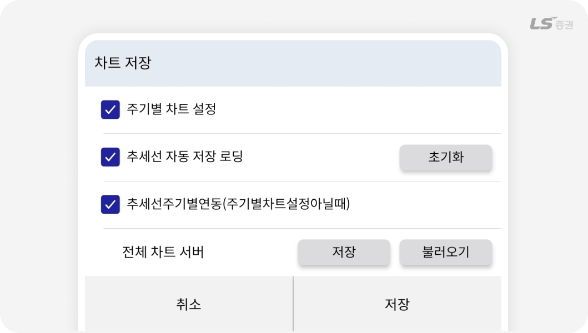
공들여 설정한 차트 환경과 직접 작도한 분석 도구들을 시스템에 어떻게 기록하고 불러올지 결정하는 기능이에요. 전체 차트 서버 기능을 통해 HTS에서 공들여 만든 차트 환경을 MTS에서도 그대로 연동해서 사용할 수 있어요.
-
1-1가격정보
-
2차트유형
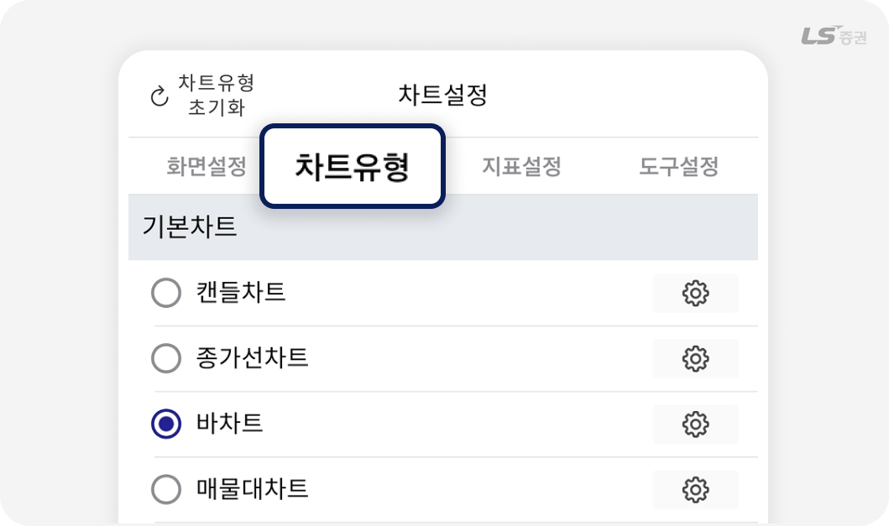
가격의 흐름과 거래량을 파악할 수 있는 기본차트와 다양한 기술적 지표를 통해 나만의 분석 환경을 설계할 수 있는 분석 차트로 이루어져 있어요.
-
2-1기본차트
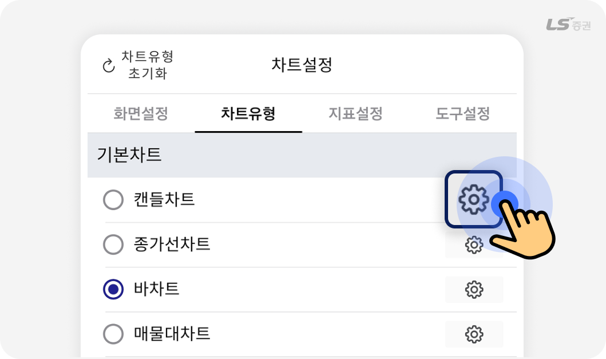
주가의 흐름과 가격 변동을 직관적으로 보여주는 데 중점을 둔 가장 대중적인 형태로 주가의 추세와 변동 폭을 한눈에 파악하기 좋은 캔들차트와 세부적인 변동보다는 전반적인 흐름(추세)을 파악할 때 유용한 종가선 차트 등이 있어요.
-
2-2기본차트 > 설정버튼
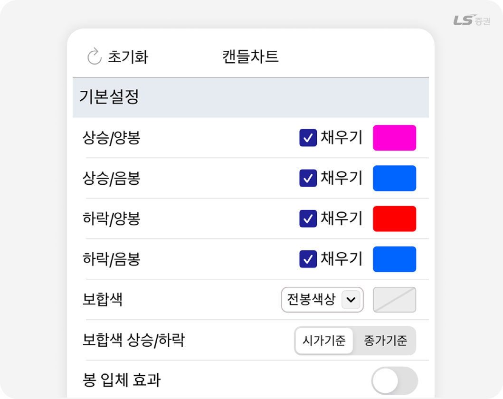
차트목록 우측에 설정 버튼을 누르면 차트를 커스터마이징 할 수 있어요. 차트의 상승/하락과 양봉/음봉에 따라 색상을 세분화해서 지정할 수 있고 보합색, 봉 입체 효과, 로그 차트 등의 기본 설정을 할 수 있어요.
-
2-3분석차트
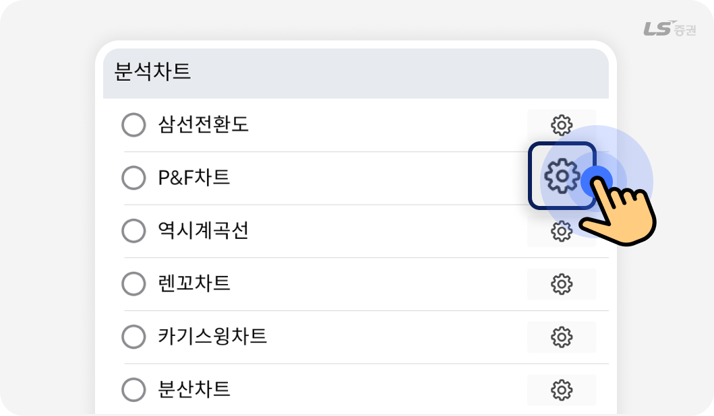
가격의 변화(전환), 통계적 분석에 집중하여 매매 타이밍을 포착하기 위한 특수 차트로 사소한 파동을 제거하고 큰 추세의 전환 확인을 위한 삼선전환도와 시간과 거래량을 무시하고 가격 변동만을 기록하는 P&F차트 등이 있어요.
-
2-4분석차트 > 설정버튼
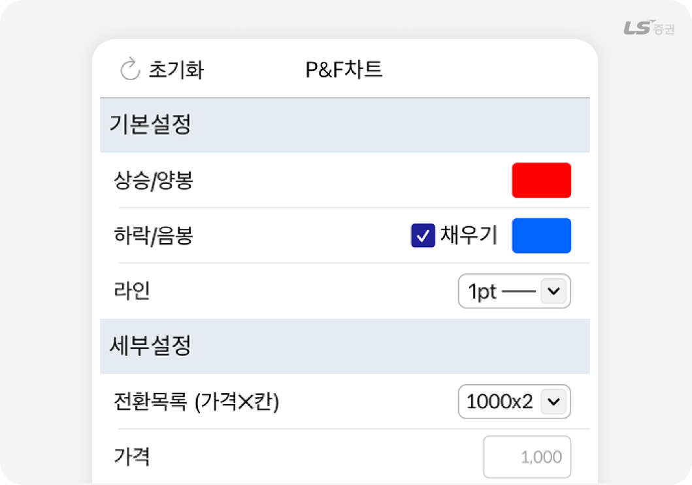
차트 목록 우측에 설정 버튼을 누르면 차트를 커스터마이징 할 수 있어요. 차트의 상승/하락과 양봉/음봉에 따라 색상과 라인을 세분화해서 지정할 수 있는 기본 설정 기능과 전환 목록, 가격, 칸을 설정할 수 있는 세부 설정 기능이 있어요.
-
2-1기본차트
-
3지표설정
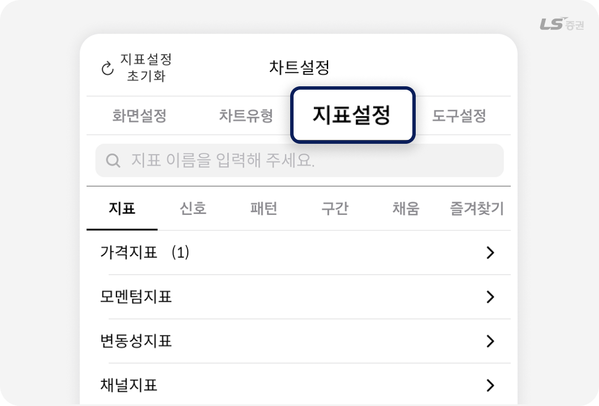
각 차트별 세부 기능을 소개하는 기능으로 검색을 통해 지표, 신호, 패턴, 구간, 채움 등 필요한 지표를 즉시 찾아 나만의 즐겨찾기로 등록해 보세요. 즐겨찾기한 항목은 차트 화면 > 즐겨찾기 탭을 통해 확인할 수 있어요.
-
3-1지표
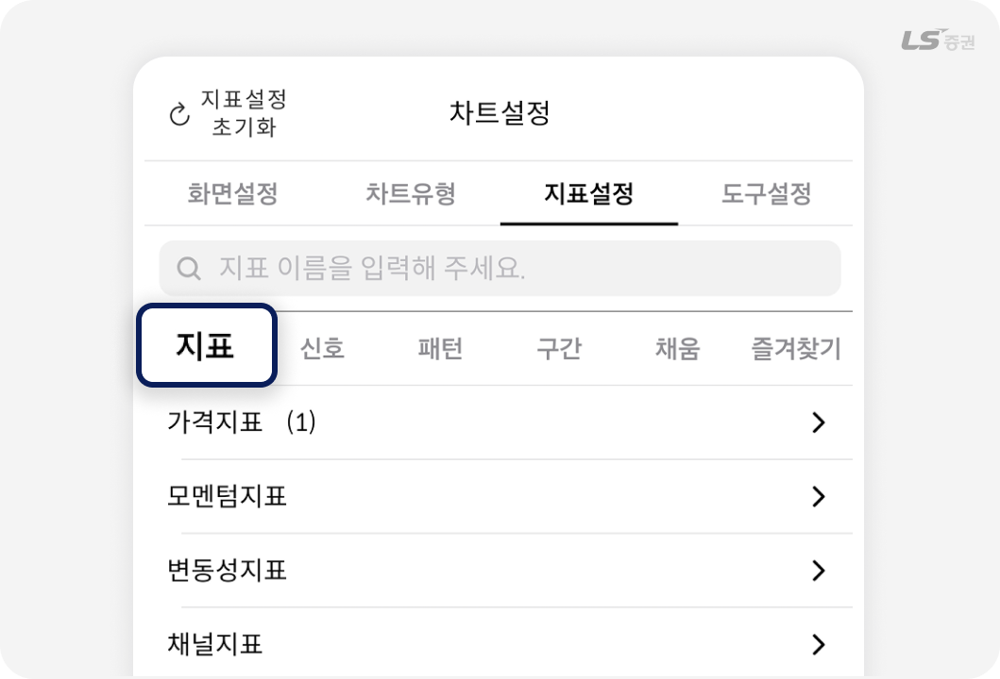
주식 및 자산 분석 시 사용되는 기술적 지표들을 성격에 따라 나눈 것으로 현재 가격의 위치나 평균적인 가격 수준을 파악하는 데 사용하는 가격지표와 추세의 강도가 세지는지, 혹은 과매수/과매도 상태에 진입했는지를 보여주는 모멘텀 지표 등이 있어요
-
3-2신호
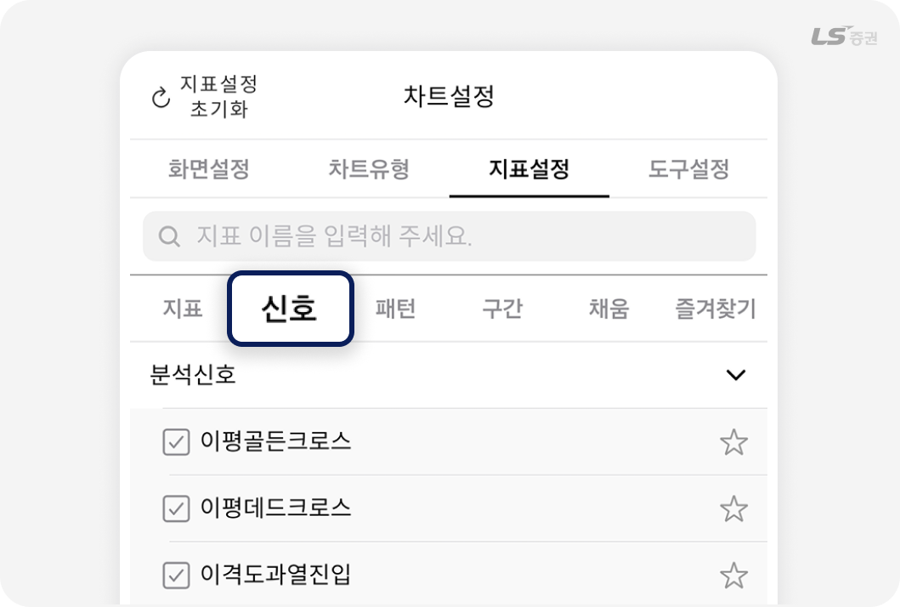
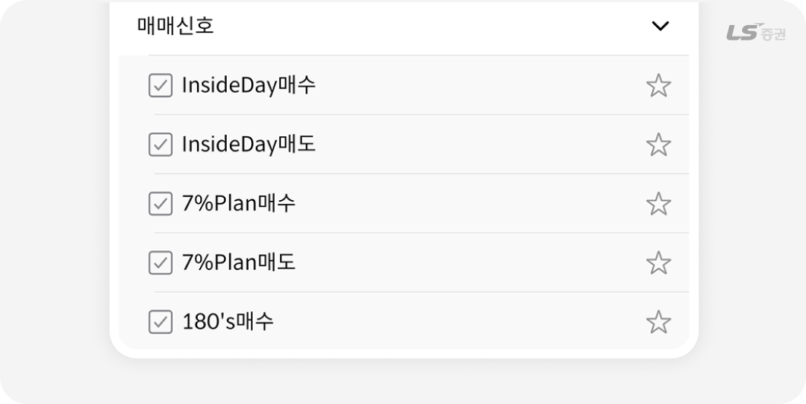
특정 기술적 조건이 충족되었을 때 차트상에 화살표나 표식으로 알려주는 기능이에요.
분석신호는 주요 지표들의 수치 변화나 교차가 일어나는 지점을 포착하는 신호로 주로 추세의 시작이나 변동성의 극단치를 파악하는 데 활용해요.
매매신호는 특정한 가격 패턴이나 수치화된 전략 모델에 근거하여 실제 매수 혹은 매도 타이밍을 직접적으로 제안하는 신호에요.
-
3-3패턴
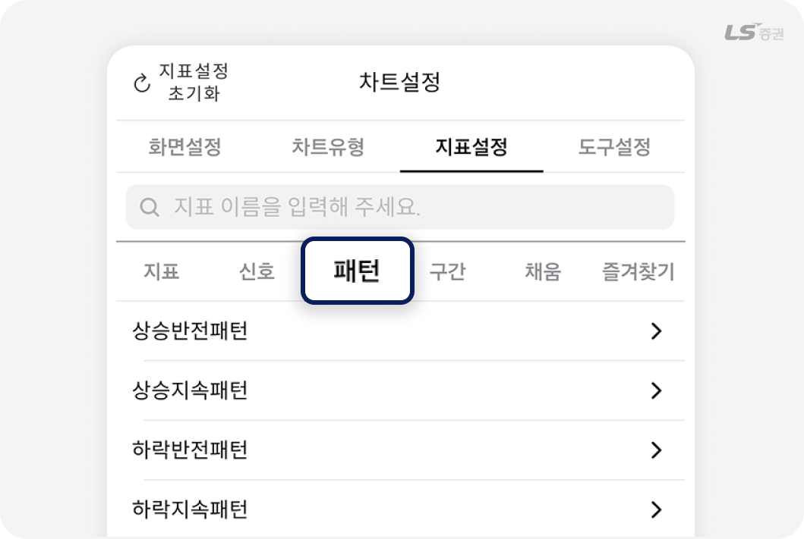
캔들의 배열이나 주가의 흐름이 특정 정형화된 형태를 갖추었을 때 이를 자동으로 포착해 주는 기능이에요.
하락하던 주가가 멈추고 상승으로 돌아설 때 나타나는 상승반전패턴과 주가가 상승하는 도중 잠시 쉬어 가는 구간(눌림목)에서 나타나는 상승지속패턴 등이 있어요.
-
3-4구간
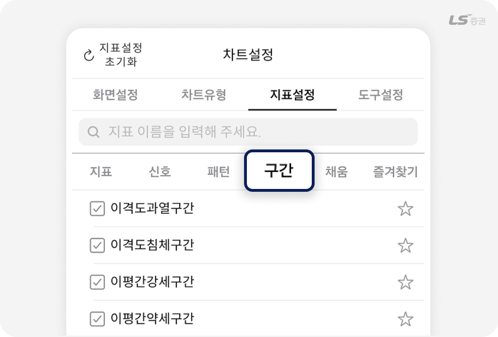
특정 지표가 일정 수준에 도달한 '상태'를 차트 배경색 등으로 시각화하여 현재 시장의 분위기를 직관적으로 파악하게 돕는 기능이에요.
주가가 이동평균선보다 지나치게 높게 형성되어 있어 조만간 하락하거나 횡보하며 이평선과 만날 가능성이 높은 이격도과열구간, 주가가 이동평균선보다 과도하게 낮게 형성되어 있어 낙폭 과대에 따른 기술적 반등이 예상되는 이격도침체구간 등이 있어요.
-
3-5채움
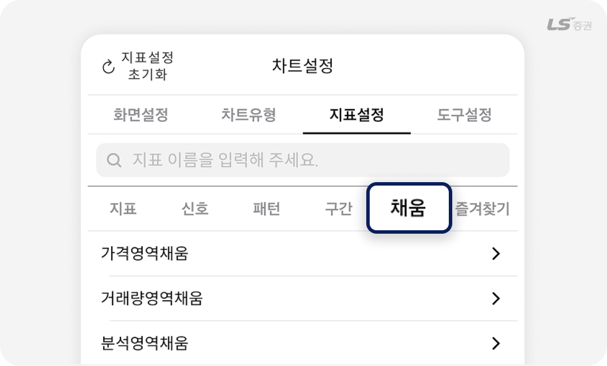
두 지표 사이의 공간이나 특정 영역을 색상으로 채워, 현재 가격이나 지표의 상태를 시각적으로 더 명확하게 인지하도록 돕는 기능이에요.
가격영역채움 : 주로 캔들이 위치하는 가격 차트 위에서 특정 선들 사이를 색으로 채워요.
거래량영역채움 : 거래량 지표 영역에서 특정 기준에 따라 색을 채워요.
분석영역채움 : 조지표(RSI, MACD, 스토캐스틱 등)가 표시되는 별도의 분석 창에서 특정 구간을 채워요.
-
3-6즐겨찾기
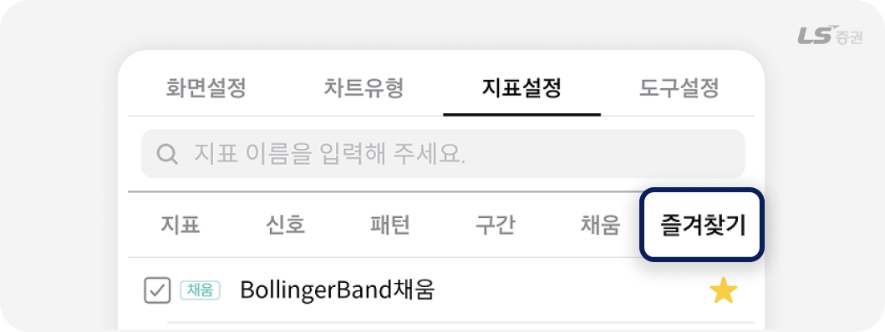
수많은 기술적 지표, 신호, 패턴 중에서 본인이 실제 매매 전략에 활용하는 핵심 항목들만 별도로 관리하는 개인화 기능이에요.
TIP!
위 탭에서 설정한 즐겨찾기 항목은 ‘1-3. 차트설정 > 즐겨찾기’ 에서도 쉽게 확인할 수 있어요.
-
3-1지표
-
4도구설정
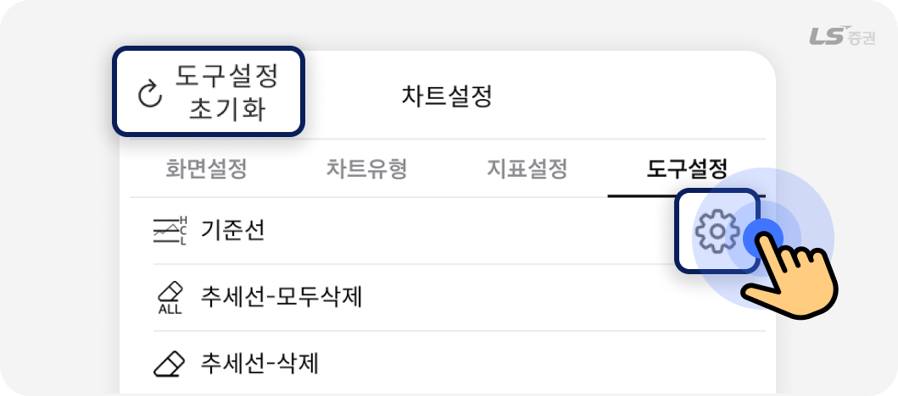
차트에 사용하는 각 도구별로 선의 색상과 굵기는 물론, 수치 표시나 선 연장 여부까지 내 분석 스타일에 맞춰 세밀하게 설정할 수 있어요.
각 도구 옆의 상세설정을 통해 나만의 분석 스타일에 맞춰 도구들을 최적화해 두면 차트 위에 정교한 기준을 세우기가 훨씬 수월해져요.
TIP!
여러 설정을 시도해 보다가 처음 상태에서 다시 분석을 시작하고 싶을 때, 좌측 상단의 초기화 기능을 활용하면 화면설정, 차트유형, 지표설정, 도구설정 모두 탭별로 세팅을 간편하게 되돌릴 수 있어요.
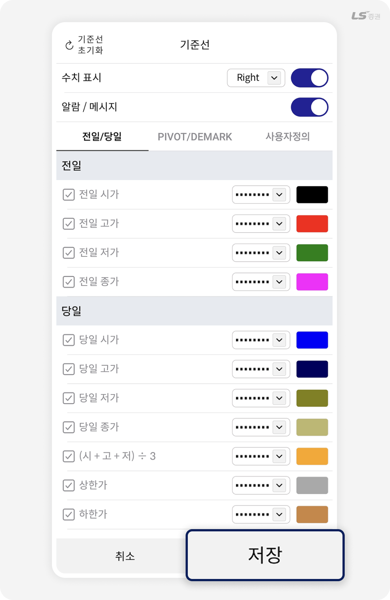
참고해주세요!
원하는 설정을 모두 선택하셨다면 반드시 하단의 저장 버튼을 눌러주세요. 저장을 완료해야만 변경하신 설정값이 실제 차트 화면에 정상적으로 반영됩니다.